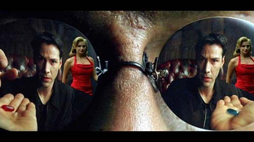
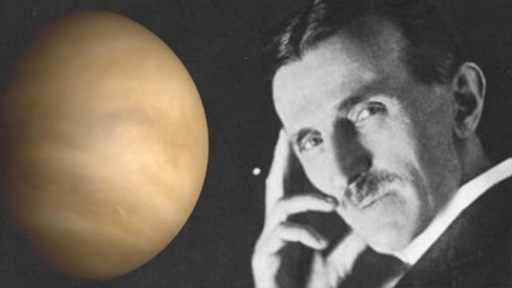
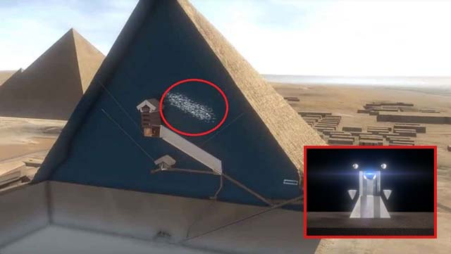

Una filtración de contraseñas relaciona al magnate Bill Gates en la supuesta creación del virus que causa el COVID-1... Seguir leyendo
The Matrix se lanzó a las pantallas en 1999, y en ese momento muy pocas personas se hubieran imaginado cuán ubicuo se convertiría en la sociedad gracias a las técnicas de creación de películas utilizadas... Seguir leyendo
Un documento recientemente desclasificado del FBI, revela que Nikola Tesla, uno de los inventores más brillantes y prolíficos conocidos, procedía de Venus. Es decir, era un extraterres... Seguir leyendo

En el año 2015, el proyecto ScanPyramids fue llevado a cabo. Este consistía en varias técnicas no invasivas y no destructivas que podían ayudar a comprender mejor cómo se construyó las pirámides...
Seguir leyendo

O escuche el podcast a continuacion:
No te pierdas ningun contenido, descarga nuestra aplicacion y sigue en contacto con nosotros.
Descarga el app Android